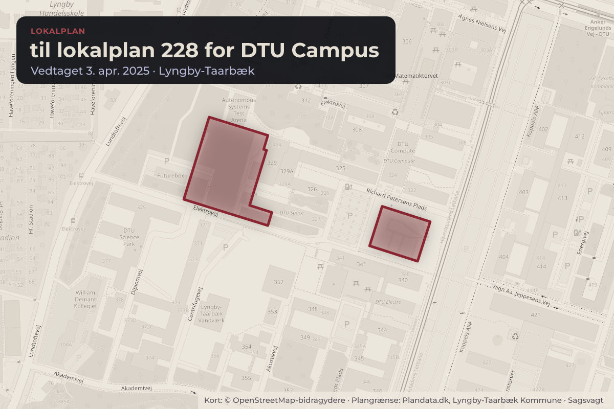
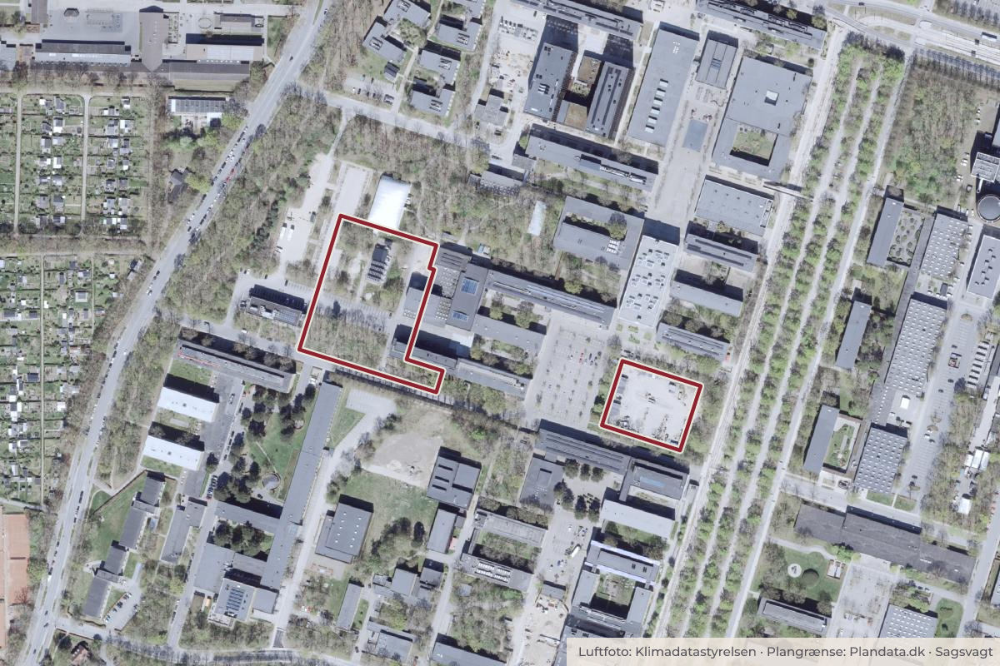

Besluttet 23. september, Byplanudvalget, Lyngby-Taarbæk
Lokalplan 305 for DTU Campus og Kommuneplantillæg endelig vedtagelse (Beslutning) (Genforelæggelse)
Med denne sag forelægges indkomne høringssvar til Lokalplan 305 for DTU Campus og forslag til kommuneplantillæg 11/2021. Desuden forelægges den sammenfattende redegørelse for den tilhørende miljørapport. Lokalplan 305 forelægges til endelig godkendelse med de foreslåede redaktionelle ændringer.

Kort: © OpenStreetMap-bidragydere. Plangrænse: Plandata.dk, Lyngby-Taarbæk Kommune.

Har du et billede fra til lokalplan 228 for DTU Campus? Send det til os
Kort fortalt
- Hvem
- Byplanudvalget, Lyngby-Taarbæk Kommune
- Hvornår
- Onsdag 23. september 2026
- Status
- Besluttet. Udvalget anbefaler lokalplanen sendt i fornyet høring med følgende ændringer: § 6.3.1 ændret således, at byggezone 2 udvides med 20 meter fra Lundtoftevej i delområde 1, og at antallet af høje bygninger i delområde 1 reduceres fra 12 til 10. Desuden anbefaler udvalget, at § 11.3, om at randskov skal etableres før ibrugtagning af ny bebyggelse, bibeholdes ved endelig vedtagelse af lokalplanen. Udvalget ønsker endvidere, at forvaltningen forud for endelig vedtagelse udfærdiger et opsummerende trafiknotat.Beslutningen er forkortet her. Læs hele beslutningen
- Næste skridt
- Såfremt lokalplan og kommuneplantillæg godkendes, træder planerne endeligt i kraft, når de offentliggøres på plandata og kommunens hjemmeside.
Læs hele sagen Kommunens egen tekst
Indstilling
Forvaltningen foreslår, at
1. Lokalplan 305 for DTU Campus godkendes endeligt med de i høringsnotatet foreslåede ændringer.
2. Kommuneplantillæg 5/2025 godkendes endeligt. 3. Den sammenfattende redegørelse til Miljørapport for lokalplanforslag 305 og tilhørende
kommuneplantillæg, godkendes. 4. Udbygningsaftalen vedrørende trafikale tiltag i forbindelse med p-huse godkendes
endeligt.
Beslutningskompetence
Byplanudvalget anbefaler indstillingspunkt 1, 2 og 3.
Økonomiudvalget anbefaler indstillingspunkt 4.
Kommunalbestyrelsen beslutter indstillingspunkt 1-4.
Beslutningsforløb
Beslutning fra Byplanudvalget 2026-2029, den 10. juni 2026, punkt 8:
Ad 1-3) Udsat, idet udvalget ønsker en mulighed for færre høje bygninger, særligt i den sydvestlige del af anden kvadrant, og gerne placeret længere væk fra randskoven mod Lundtoftevej.
Troels Bennike (I) var fraværende.
Supplerende sagsfremstilling
Høje bygninger i den gældende Lokalplan 228
I den gældende lokalplan 228 for DTU er det muligt at opføre høje bygninger (op til 33 meter inkl. tagteknik) i de såkaldte fortætningszoner, hvor zone B ligger i anden kvadrant.
Fortætningszonens afstand til Lundtoftevej er ned til 30 meter. Den konkrete bestemmelse i lokalplanens jf. § 6.5 lyder: "Bebyggelse i fortætningszonerne jf. kortbilag 4. 6.5.1 I fortætningszonerne C, D og E må bygningshøjden ikke overstige 27 m over terræn. Der kan etableres taginstallationer jf. § 6.4 op til 6 m over øverste tagplan dog maks. til kote 79 i zone D og E samt til kote 78 i zone C. I fortætningszone A og B må bebyggelse ikke overstige kote 67. Skorstene og lignende. kan dog overstige topkoten med kommunalbestyrelsens tilladelse i hvert enkelt tilfælde".
Jf. § 6.6.1 "Uden for fortætningszonerne må bygningers facadehøjde ikke overstige 12,5 m over terræn. For bygninger med ensidig tagflade gælder facadehøjden dog kun for bygningens lave side. Intet punkt af en bygnings ydervæg eller tagflade må overstige 20 m over terræn og samtidig ikke overstige kote 63. Taginstallationer kan dog overstige kote 63 med kommunalbestyrelsens tilladelse i hvert enkelt tilfælde".
Høje bygninger i Lokalplanforslag 305
I lokalplanforslag 305 arbejdes der ikke med fortætningszonerne, men med to byggezoner som vist på lokalplanforslagets bilag 4. Dette bl.a. fordi de har vist sig, at der af hensyn til placering af nye bygninger i forhold til eksisterende forskningsområder mv. er behov for en større fleksibilitet.
Det fremgår af lokalplanforslaget § 6.3.1, at der i byggezone 2 må opføres bebyggelse i maks. 3 etager og med en bygningshøjde på maks. 15,5 m og maksimalt 4,5 m tagteknik, dvs. en totalhøjde på maks. 20 m.
I byggezone 1 må der opføres i alt op til 12 bygninger i maks. 6 etager med en facadehøjde på maks. 29 m, med tillæg af en tekniketage, så den samlede maksimale bygningshøjde er 33 m. Tagteknik må have en maksimal højde på 6 meter. Tekniketage skal trækkes min. 1 meter tilbage fra facadelinjen. De 12 høje bygninger er inklusiv Bygning 112 og Bygning 220.
Den maksimale totalhøjde er 33 meter, hvorfor en bygning med facadehøjde på 29 meter, maksimalt kan have en tekniketage på 4 meter.
I lokalplanforslaget er byggezone 2 placeret i en afstand af 30 meter fra Lundtoftevej og byggezone 1 i en afstand af 80 meter fra Lundtoftevej. De høje bygninger er altså i lokalplanforslaget rykket op til 50 meter længere væk fra Lundtoftevej i forhold til det gældende plangrundlag.
Undersøgte alternativer efter udvalgets ønske i juni
Forvaltningen har i august 2026 været i dialog med DTU om alternative placeringer af byggezonerne, således, at der vises forslag til at høje bygninger (byggezone 1) kommer til at ligge længere væk fra Lundtoftevej. Samtidig har der været dialog med DTU om en reduktion af antallet af høje bygninger i lokalplanens delområde 1 (området nord for Anker Engelunds Vej).
Af lokalplanforslagets bilag 4 fremgår jf. ovenfor, at byggezone 2 ligger i en afstand mellem 30 m og 80 meter fra Lundtoftevej. I de alternative placeringer er byggezone 2 rykket yderligere
20 m, 40 m, 60 m og 80 m længere ind på DTU, hvilket betyder en tilsvarende reduktion af byggezone 1. DTU´s undersøgelser viser, at det alternativ hvor byggezone 2 er rykket 20 meter længere ind på DTU (100 meter fra Lundtoftevej) ikke har betydning for pipelineprojektet CELLMA (5 etager). Såfremt byggezone 2 rykkes yderligere 40 meter ind på DTU (120 meter fra Lundtoftevej) vil byggezone 2 gennemskære ca. halvdelen af pipelineprojektet CELLMA. Hvis indrykningen er 60 meter (140 meter fra Lundtoftevej) pipelineprojektet CELLMA ikke kunne opføres i 5 etager. (Bilag 8)
Evt. ændringer af byggezoner vil medføre at miljørapportens visualiseringsbilag skal justeres.
Forvaltningen har herudover været i dialog med DTU om en reduktion af antallet af høje bygninger i delområde 1. DTU har meddelt, at de er indstillet på at reducere antallet af høje bygninger fra 12 til 10 høje bygninger i dette område. Der er ikke visualiseringer i Lokalplanforslag 305 med 12 høje bygninger indenfor delområde 1. I lokalplanforslaget er der alene vist et mulighedsstudie i lokalplanredegørelsen på side 14.
Forvaltningens vurdering
Forvaltningen vurderer, at der i lokalplanforslag 305 med de fastlagte byggezoner og med antallet af høje bygninger i delområde 1, er taget højde for afstand til naboer og til Lundtoftevej, samtidig med at lokalplanforslaget giver mere fleksibilitet end den gældende lokalplan i forhold til at placere fremtidig bebyggelse på DTU Campus.
Hvis det ønskes at reducere antallet af høje bygninger og indskrænke området, hvor høje bygninger kan placeres, anbefaler forvaltningen, at grænsen mellem zone 1 og 2 rykkes 20 meter yderligere væk fra Lundtoftevej, samt at antallet af høje bygninger i delområde 1 reduceres til 10. Det betyder, at planforslaget skal i en kortere supplerende høring for en afgrænset kreds, herunder DTU og nærmeste naboer.
Supplerende kan det oplyses, at Lundtofte Borgerforening efter høringsperiodens afslutning og efter Byplanudvalgets behandling den 10. juni 2026 har fremsendt kommentarer til forvaltningens høringsnotat (bilag 9). Borgerforeningen stiller spørgsmål ved trafikmængder ved bommen ved Nordvej samt spørgsmål til beplantningen i nye randskov i den nordlige del af DTU. Forvaltningen har sendt Borgerforeningens brev til DTU med henblik på en udtalelse til de to punkter. DTU har efterfølgende fremsendt deres bemærkninger til brevet (Bilag 10).
Problemstilling
Baggrund:
Lokalplan 305 for DTU Campus (bilag 1) og Kommuneplantillæg 11/2021 (bilag 2) har været fremlagt i offentlig høring fra den 16. december 2025 til den 25. februar 2026. Der blev afholdt borgermøde den 4. februar 2026 (bilag 3). Forvaltningen har modtaget 10 høringssvar (bilag 4) indsendt fra borgere, Bygningskultur Forening, fem grundejerforeninger, Vestforbrændingen, Movia og Lyngby-Taarbæk Forsyning. Alle høringssvar er refereret og kommenteret af forvaltningen i høringsnotat (bilag 5). Herunder beskrives de væsentligste høringssvar:
Trafik, veje og parkering: Flere er bekymret for om udbygningen af DTU og en reduktion af parkeringsnormen, vil medføre mere trafik og parkering i de omkringliggende boligområder. Man peger også på at lukningen af adgangen til parkeringsalléen fra Anker Engelunds Vej vil betyde mertrafik på de øvrige adgangsveje. Derudover er der ønske om, at parkering sker under terræn.
Bebyggelsesprocent: Der er indsigelser mod forøgelsen af bebyggelsesprocenten fra 50 til 60.
Høje bygninger: Der gøres indsigelse mod lokalplanens mulighed for at bygge i op til 33 m´s højde da man mener, at dette strider mod DTU´s oprindelige bebyggelseskarakter og er for voldsomt mod de tilstødende villaområder.
Bebyggelse i parkeringsalléen og det grønne: Flere indsigelser drejer sig om muligheden for at bygge fire pavilloner og en større velkomstbygning (Origo) i parkeringsalléen. Overordnet peges på, at dette er et væsentligt indgreb i den grønne allé og oprindelige bebyggelsesstruktur. Flere peger også på vigtigheden af, at der etableres en ny randskov mod det nordligste skel som konsekvens af at DTU udvider deres areal.
Bebyggelsens ydre fremtræden: Der stilles forslag om at lokalplanen lægger vægt på at anvende gule mursten som oprindelig bebyggelse, da det er smukt og bæredygtigt. Der er også forslag til, at lokalplanen kræver teknik på tage afskærmet. DTU har derudover på møde med forvaltningen den 29. maj 2026 gjort indsigelse mod begrønning af parkeringshusenes mod Nordvej.
Bevaring: Bygningskultur Foreningen foreslår, at DTU udpeger 1 – 3 oprindelige laboratoriebygninger som bevaringsværdige.
Løsninger
Trafik, veje og parkering:
Trafik, veje og parkering:
Undersøgelser viser samlet ledig parkeringskapacitet på DTU, selvom enkelte små parkeringsarealer er fuldt udnyttet. Lokalplanen fastlægger en parkeringsnorm på 1 p-plads pr. 100 m² etageareal, og giver mulighed for at reducere med 25 procent indenfor et 300 meters cirkelslag fra letbanestationerne på DTU. Reduktionen følger stationsnærhedsprincippet og skal både øge brugen af kollektiv trafik og motivere ny bebyggelse tæt på letbanestationerne.
Bebyggelsesprocent:
Lokalplanen er udarbejdet efter DTU i januar 2024 ansøgte kommunen om en ny lokalplan med mulighed for bl.a. at øge bebyggelsesprocenten fra 50 til 60. Ønsket skyldes et øget behov for udbygning bl.a. af studie- og forskningsfaciliteter. En forøgelse af bebyggelsesprocenten har været mulig i kommuneplanen siden 2009. Forvaltningen vurderer, at lokalplanen er i overensstemmelse med kommuneplanens rammer.
Høje bygninger:
Lokalplanen giver mulighed for at kunne opføre op til i alt 24 ”høje bygninger”. Høje bygninger er alle bygninger, som overskrider en højde på 20 m (inkl. tagteknik). Dvs. at en ”høj bygning” således også blot kan være 21 m. På lokalplanens side 14 ses det redegjort, at hvis DTU udnytter restrummeligheden på op til 60% så kan DTU maks. opføre 12 bygninger, der udnytter den maksimale højde på 33 m. Lokalplanens pkt. 6.3.1 og 6.3.2 suppleres med følgende note: ”En ”høj bygning” defineres som enhver bygning, der overstiger en totalhøjde på 20 m, og vil derfor indgå i beregning af det maksimale antal på 12 i hvert delområde.”
Bebyggelse i parkeringsalléen og det grønne:
Lokalplanen giver mulighed for at opføres op til fire pavilloner nord for Origo. Hver pavillon må ikke være mere end 40 m², og der må i alt opføres maks. 120 m² etageareal. Lokalplanens pkt. 6.3.4 fastsætter, at bygningerne ikke må være højere end 3,5 m. Forvaltningen kan tilslutte sig bekymringen over at parkeringsalléens grønne karakter kan svækkes såfremt der bygges for meget i det. For at skærpe hensynet til træerne i alléen foreslår forvaltningen dels at reducere størrelsen på pavillonerne – fra samlet 120 m² til 90 m² etageareal, dels at supplere lokalplanen med bestemmelser, der yderligere sikrer træerne. For at sikre, at pavillonerne tilpasses den særlige placering i parkeringsalleen foreslår forvaltningen desuden tilføjet en ny bestemmelse under pkt. 7, hvor det fastsættes at pavilloner skal fremstå i en let konstruktion, og i overvejende i transparente materialer.
Lokalplanen giver i pkt. 6.1.4 mulighed for at opføre en bygning i parkeringsalléen med op til 1.200 m2 etageareal. I pkt. 6.3.5 fastsættes en facadehøjde på maks. 11 m med mulighed for at gå op til 15,5 m inkl. tagteknik. En tagtekniketage af denne størrelse svarer til de største som er på laboratoriebygninger, hvilket forvaltningen vurderer ikke er nødvendig til en pavillonbygning. Derfor foreslår forvaltningen, at højden på Origo reduceres fra op til 15,5 m inkl. tagteknik til op til 14 m inkl. tagteknik. Tekniketagen foreslås desuden trukket minimum 5 m tilbage fra facadelinjen.
DTU har fremsendt supplerende oplysninger om randskoven mod Nord, og på denne baggrund vurderer forvaltningen, at randskoven kan siges at være etableret. Krav om randskoven som
forudsætning for ibrugtagningstilladelse foreslås derfor fjernet i lokalplanens bestemmelser og kortbilag.
Bebyggelsens ydre fremtræden:
I forbindelse med Byplanudvalgets behandling af lokalplanforslaget den 29. oktober 2025 valgte udvalget at stramme kravet til beplantning på parkeringshusene. Herunder at facader mod Nordvej skal begrønnes. Forvaltningen vurderer ikke, at der er nye forhold i området, som kan danne grundlag for at ændre udvalgets beslutning.
Bevaring:
Lokalplanen udpeger Bygning 101 (Hovedbygningen) som bevaringsværdig. Bygningen må ikke nedrives eller ændres på det ydre uden kommunens godkendelse. Derudover udpeges en lang række af de ældste bygninger på DTU som ”oprindelige” bygninger, da disse er med til at vise den grundlæggende bebyggelsesstruktur og arkitektur for DTU. Disse bygninger må ikke nedrives uden kommunens godkendelse og skal fremstå som originalt. Dog er er mulighed for at lave tilbygninger til dem samt foretage mindre ændringer i stueetagen for at forbedre visuel og fysisk kontakt til udearealerne.
De ”oprindelige” bygninger er således omfattet af særlige restriktioner og nedrivningsforbud. Forvaltningen vurderer, at lokalplanens øvrige bestemmelser vedrørende placering, omfang, materialebrug samt beplantning ligeledes er med til at sikre de overordnede bygningsmæssige og landskabelige værdier på DTU.
Der foreslås desuden foretaget enkelte mindre betydende rettelser i lokalplanens bestemmelser. Disse er alle beskrevet i høringsnotatet. Lokalplanens redegørelse vil derudover konsekvensrettes som følge af ændringer i bestemmelserne.
Strategisk ramme Lokalplan følger både planstrategien Byudvikling i balance og Kommuneplan 2025. DTU Campus er udpeget som et stationsnært kerneområde. Planlægningen understøtter fortætning og bæredygtig byudvikling omkring letbanen.
Videre proces
Såfremt lokalplan og kommuneplantillæg godkendes, træder planerne endeligt i kraft, når de offentliggøres på plandata og kommunens hjemmeside. Kommuneplantillæggets nummer ændres redaktionelt til 5/2025, idet der er vedtaget en ny kommuneplan 2025 siden kommuneplantillæg 11/2021 har været i høring.
Økonomi
Sagen har ingen umiddelbare bevillingsmæssige konsekvenser.
Ved indførelse af eksempelvis nye trafiktiltag, som f.eks. signalanlæg vil der dog opstå forhøjede årlige driftsomkostninger i forbindelse med vedligeholdelse af trafikanlægget, udgifterne forventes at ligge mellem 40.-100.000 kr. Det medfører, at driftsrammen på det tidspunkt skal forhøjes, så den kan rumme de årlige udgifter til anlæggets drift. Der er på
nuværende tidspunkt ikke afsat finansiering til at dække udgiften, hvis det bliver aktuelt, vender forvaltningen tilbage med en sag.
Punkt 5: Lundtofte Skolestræde revideret plangrundlag forslag til lokalplan 304 Lundtofte Skolestræde ny daginstitution (Beslutning)
Fraværende: Troels Bennike (I)
Beslutning
Udvalget anbefaler lokalplanen sendt i fornyet høring med følgende ændringer:
§ 6.3.1 ændret således, at byggezone 2 udvides med 20 meter fra Lundtoftevej i delområde 1,
og at antallet af høje bygninger i delområde 1 reduceres fra 12 til 10.
Desuden anbefaler udvalget, at § 11.3, om at randskov skal etableres før ibrugtagning af ny bebyggelse, bibeholdes ved endelig vedtagelse af lokalplanen. Udvalget ønsker endvidere, at forvaltningen forud for endelig vedtagelse udfærdiger et opsummerende trafiknotat.
Udvalget opfordrer desuden DTU til at etablere det i redegørelsesdelen (side 11) af lokalplanen beskrevne elektroniske parkeringshenvisningssystem.
Kilde: Lyngby-Taarbæk Kommune, Byplanudvalget, referat fra mødet onsdag 23. september 2026, punkt 4. Læs den originale sag hos kommunen.